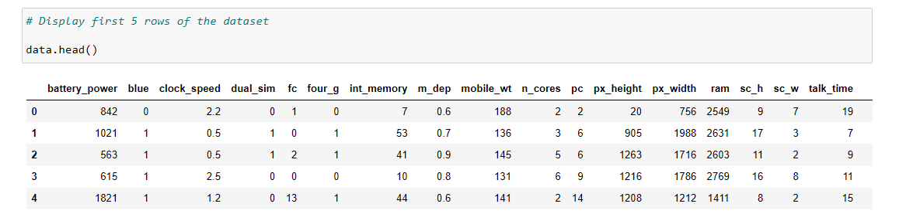
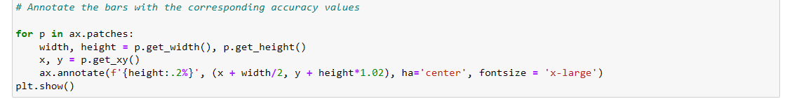

Mobile Price Analysis And Classification
Introduction:
Welcome to my data science project, "Mobile Price Analysis And Classification." In this project, I explored and analyzed a dataset containing various features related to mobile phones. The primary objective was to understand the factors influencing mobile prices and build a classification model to predict price ranges.
Data Exploration:
Sample Data:
Loaded the dataset using Pandas.
Here are the first few rows of the dataset to provide a glimpse of the information:

Key Visualizations:
I created visualizations to uncover insights, relationships, and patterns within the dataset. For example, the line plot showcased the relationship between RAM and mobile prices.

Feature Selection:
Importance of Feature Selection:
To enhance the model's performance, I employed feature selection techniques such as SelectKBest, ExtraTreesClassifier, and mutual_info_classif. This step helped identify the most relevant features for the classification model.
Selected Features:
The selected features, visualized through bar plots and heatmaps, played a crucial role in improving the model's accuracy.

Machine Learning Models:
Implemented Models:
I implemented several machine learning models, including:
Logistic Regression
Support Vector Machine (SVM)
K-Nearest Neighbors (K-NN)
Naive Bayes
Decision Tree Classification
Code Example:
Model Evaluation:
Accuracy Scores:
I evaluated each model's performance and calculated accuracy scores. This allowed for a comprehensive comparison of the models.

Strengths and Weaknesses:
Discussed the strengths and weaknesses of each model, providing insights into their suitability for the given dataset.
Visualization:
Model Comparison:
The bar plot visualizes the accuracy of different classification models, making it easy to compare their performance.

Annotations:
Each bar in the plot is annotated with the corresponding accuracy percentage.

Conclusion:
In conclusion, the project delves into the world of mobile price analysis and classification. Key features influencing mobile prices were identified, and machine learning models were employed to predict price ranges.
Tools and Technologies:
Python
Pandas
Scikit-learn
Seaborn
Matplotlib
Code:
GitHub Repository: Link to GitHub Repository